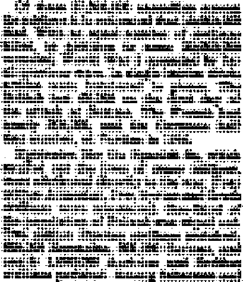
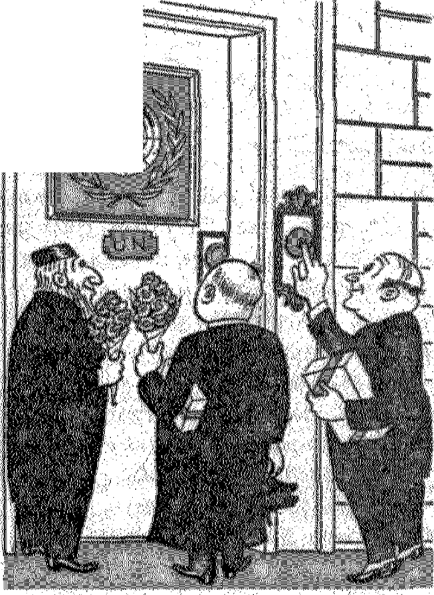

This Warring World
'Nation against nation, kingdom against kingdom, as foretold
Religion Woos the United Nations
Dabbling in politic*, religion commit* spiritual adultery
Rising Cost of Living
Suggested remedies are little more than ineffective aspirin
Mohammed, Prophet of Islam
Life and teachings of Allah’s prophet
THE MISSION OF THIS JOURNAL
News sources that are able to keep you awake to the vital Issues of oun times must be unfettered by censorship and selfish interests. “Awake!** has no fetters. It recognizes facts, faces facta, is free io publish facts. It is not bound by political ambitions or obligations; it is unhampered by advertisers whose toes must not, be trodden on; it is unprejudiced by traditional creeds. This journal keeps Itself free that It may speak freely to you. But it does not abuse its freedom. It maintains integrity to truth.
"Awake I** uses the regular news channels, but is not dependent on them. Its own correspondents are on all continents, in scores of nations. From the four corners of the earth their uncensored, on*ihe'HCenes reports come to you. through these columns. This journal’s viewpoint Is not narrow, but is international It is read in many nations, in many languages, by persons of all ages. Through its pages many fields of knowledge pass in review—government, commerce, religion, history, geography's science, social conditions, natural wonders—why, its cover-age is as, broad as the earth and as high as the heavens.
“Awake I” pledges itself to righteous principles, to expajfing hidden foes and subtle dangers, to championing freedom for all, to comforting mourners and strengthening those disheartened by the failures of a delinquent world, reBecting sure hope for the establishment of a righteous New World.
Get acquainted with “Awake!” Keep awake by reading "Awake!”
Published Shmimoktuly By WaTCHTOWEH BIBLE AMD TRACT SOCIETY, INC.
117 Adams Street Brooklyn 1, N. Y*p TL 3, A.
N. H. IDfCfiB, Praefdeni Qrast Suiter, Secretary
Five cents a copy One dollar a year
UtMlttancM should be sent to offto In yonr country in compliance with rejuUtions to guarantee eVe delivery of nwiey. flemittanCM ere accepted at Broafalyn from countries wtere no office la located, by intaraatlcaal money order only. BubftCrfntion rates In different countries ato htfe atatod in local currency.
Notice *f eocpintlQH (with renewal hlanlt) Is sent st least tro lanes belort sutacripLlxm explres-
Chanp Of adJrtM sent to our office may Tae expected effective within one month. Semi your old ag well as mw address.
Offices Yearly Subscription Itet&
An erica, U.S., 1 IT Adams St., Brooklyn 1. N.Y. $1 Airtralja, T Beresford Rd.* BtrnMeht NAW. 6s Canatfa. 40 Irvin Ave., Toronto 5, Ontario $1 £nf land, 34 Craven Terrace, Lcmdoic, W. 2 ba Sorth Africa. 62s Boetou House, Cape Town Ba
Entered as secabd-class matter u Brooklyn, N. 7., Ad of March 3* 1879. Printed in U. 8. A
CONTENTS
Torrid Zones of the Atmosphere
.Religion Woos the United Nations
Religion Helps Shape the Charter
U. N. 'Stands in the Holy Place’
“Thy Word Is Truth”
®/?Now it is high time to awake.— Romans 13:11 &
Volume XXVIII
g?^g----->■< I« — Ml , ■— I —
Brooklyn, N.Y., 6epttmb«r B, 1M7
Number 17
AR is a hateful thing. The history of this world is the history of its wars written in human blood. Nor is the record of slaughter that began when Cain warred against his brother completed ; the closing chapters of this gruesome history of wickedness have yet to be written, which means that the blood of multitudes more will be spilled before this warring world comes to its violent end.
War has been defined as “the last resort for the settlement of disputes" (Encyclopedia Americana), “the use of organized force between two human groups pursuing contradictory policy" (Encyclopedia Britannica), "a continuation of politics by other means" (Clausewitz, the famous Prussian war philosopher), War is a most amazing phenomenon in which the instinct of self-preservation is ignored. An army displays ruthlea s destruction of a harmless and peaceable people on the one hand, and, on the other, a nation endures the greatest amount of suffering for the sake of its liberties. Glorified by the warmongers as a demonstration of bravery and self-sacrifice, war in its reality is most often a manifestation of the
base qualities of brutes and leaves in its wake wounded, exhausted and mutilated soldiers and martyred civilian populations,
A lover of peace and righteousness, after reading such a preface, would prefer to close the book and turn away from this bloody history. But to do so leaves one dangerously ignorant of vital information so necessary in this twentieth century, when preparations are being made for full-scale atomic warfare. It is therefore with a sense of duty and necessity that one briefly considers the history of this war-torn world.
Ancient historians were so careless in their details, and the ink is so faded, it is next to impossible to get more than an estimate on the number of casualties in ancient wars. Commanders often intentionally falsify their reports for the purpose of deceiving the enemy. Sometimes no distinction was made in the number killed by the enemy and those that died of wounds, diseases and accidents. Sometimes no distinction was made between prisoners of war and those missing in action. All of which makes it necessary to limit the study of statistics to more modern times.
Of all the nations of the world France has suffered the greatest losses in human life during the last three centuries. During the seventeenth century she spent 64 years at war; in the eighteenth century, 52 years; in the nineteenth century, 32 years. Practically half the time she was fighting. Of the 1,700 battles fought in Europe during this period France engaged in 1,079. The Austro-Hungarian empire was second only to France i.i the number of lives she sacrificed on the altar of patriotism. The following tabulation of casualties for a few of the major wars gives a partial picture of the ghastly hor—rs of history.
|
Wars |
Date |
Casualties |
|
Seven Years* W ar |
1756-1763 |
483,000 |
|
Napoleonic Wars |
1796-1815 |
6,000,000 |
|
II S.-British |
1812-1815 |
50,000 |
|
Bnseo-Turkish |
1828-1829 |
100,000 |
|
IL S.-Mexican |
1846-1848 |
50,000 |
|
Crimean |
1854-1856 |
787,000 |
|
Italian |
1859-1861 |
113,000 |
|
U. S. Civil War |
1861-1865 |
936,122 |
|
Freneh-M exican |
1862-1867 |
6,654 |
|
Dano-Prussian |
1864 |
8,321 |
|
Austro-Prussian |
1866 |
106,494 |
|
Franco-German |
1870-1871 |
710,000 |
|
Basso - Turkish |
1877-1878 |
250,000 |
|
Chile*P eru-B olivia |
1879 |
25,119 |
|
British-So. African |
1897 |
180,000 |
|
Sp anish- Ameri c an |
1898 |
6,000 |
|
Busso - J apanese |
1904-1905 |
550,000 |
|
Balkan Wars |
1912-1913 |
108,000 |
|
Total |
10,469,710 |
It is not an exaggeration to say that the casualties among soldiers dne to enemy fire or other causes is small in comparison with the suffering imposed upon civilian populations and non-combatants. Conquering armies have pillaged towns, raped the women, robbed them of their necessities of life, and left them to die. How many women, children and old men, if not butchered and killed outright, have heen maltreated and tortured and left to suffer the rest of their lives will never be known.
Other fruits of war include starvation and disease. The historians Thucydides, Diodorus and Tacitus tell how multitudes of civilians died from these causes wiien Athens, Syracuse and Borne were besieged in ancient times. During the Thirty Years’ War (1618-1648) 30,000 people are said to have lost their lives in the sacking of Magdeburg. Starvation killed 20,000 to 30,000 in Genoa during the Napoleonic wars. In 1830 Poland lost 326,000 inhabitants due to disease among its civilians. Dumas, in his book Losses of Life Caused by War, in describing conditions of the American Civil War, says: “It is said that many of the northern prisoners suffered from stomach troubles, which caused them to evacuate food without having assimilated it, and that their comrades frequently became so ravenously hungry that they went so far as to search among their excrements for non-digested particles of food to wash off and eat.” Wars not only leave behind disfigured and helpless creatures, but they also breed death-dealing diseases like typhus, cholera and typhoid fever. Statistics reveal that venereal diseases caused a larger number of hospitalizations among soldiers than any other disease. Here again these distresses wreak their greatest havoc upon non-combatants and the generations that follow.
All the wanton destruction of previous wars fades into insignificance when compared with the conflagration during 1914-1918. Ninety-three percent of the world’s population were involved in the first world war, or about 1,700,000,000 people. When the two greatest armies ever assembled in the field up to that time, approximately 2,000,000 men on each side, threw themselves at each other in 1914 they hoped to gain a quick victory. But after six weeks of fighting they found themselves stalemated in trenches stretching from Switzerland to
the North More ineat wera fltnvi Enlo the tranches util a total of 65J300,-000 ven locked in mortal txnnlmL Fhr four year* every attempt to gate a derisive victory cm either ride salted only in mud and Homi.
The losses of World War T wen colossal, surpassing anything up to that tima, a* noted by the following tahnto-ticm.
OAKTAUm or Woslo Was 1
|
?ep“ |
1410 |
|
MQBCflDCgtO |
tO^OD |
|
Uneca |
ft ,000 |
|
Pcrtufri | |
|
Bdriani Bolguia Mb |
9SBM 2M.9I9 831J« |
|
United Atous | |
|
Buoanls |
wa,rw |
|
Turkey | |
|
Italy |
8JOTXOO |
|
British Enpin |
S,1W» |
|
Auhc AwlFte-HcxafBry |
6.160J00 LOO.DOO |
|
Genoany |
L142J68 |
|
Emil |
6,160,000 |
aukme than wen nearly lOOyOOO Hllod hy mine eorpLcwcma.
Not only did World War I change the hotrndaries and nearly every character ef human life, it alee npeet hitherto accepted fundamental prmcxploa underlying government, mtarnatioDtd relattoii coamsree, democracy and freedom, More than a score of thrones crmabtod. But instead of making the world safe fbr democracy. it made the world cafe for dictatorship. With the rise of totalitarianism the world ta a few years was again gored by a world war so eotoual that it completely overshadowed World War J in rise and destmo-tioo.
Verid W<r W
Tn spite of the great advancement in anaansente, defensive warfare, and
tt^ombb
Total
By SMsaringimh fatten u Iks nahr sf wulta, ■adcomtaieBLa and owL W«W War I is found to to wv« Uma is great as ths an pn*te&a major wan a aompaxt
■)* obvwth^ World War IT iuous up crvwriwdcnvs Iha fori Wwld War by Dearly tear
«W "*JW wen
an a*, w JL0. WM
WORLD WAR
I
umxun a iur
life-preserving efficiency of the medicbl corps, the casualty list of World War II climbed to a new high, as noted in the following revised table.
Casualties of World War II
|
Luxemburg Netherlands Denmark Norway South Africa British Colonies New Zealand Bulgaria Finland Czechoslovakia Australia Canada Rumania India Belgium Philippines Greece Italy United Kingdom Austria France United States Yugoslavia China Poland Japan Germany U. S. S. R. |
500 6,825 7,100 10,000 23,044 28,057 31,476 36,000 52,609 60,000 69,198 92,493 100,000 100,446 109,095 118,442 147,600 301,494 574,852 700,000 747,710 1,135,054 1,685,000 3,178,063 5,265,800 5,758,338 9,500,000 15,000,000 |
|
Total |
44,835,196 |
Vatican sources set the number of casualties even higher. The total dead, they say, were 22,060,000, and the number wounded, 34,400,000.
Measuring the cost of these two twentieth-century global wars in money, they also surpass all other wars. The nineteen years of Napoleonic Wars were said to cost $15,000,000,000. Added to this the cost of all other wars thereafter, both small and great, up to 1914, there w*as at least $40,000,000,000 spent to destroy life. And how does the cost of World War I compare with this? It was over eight times as great as of the previous7 two hundred years’ wars, or $337,930,-579,657! On July 1, 1946, there was stiH $15,000,000,000 of World War I debts unpaid. As for the cost of World War II, it ran into astronomical figures amounting to more than a thousand billion dollars, $1,160,991,463,084, or more than three times as great as the cost of World War!!
. It is easy to see from this that war is the direct cause for national debts and inflations that follow. The Committee on Public Debt Policy says: “Five times in the nation's history we have incurred great national debts—all of them to finance wars?’ Whereas in 1860 the national deht was $406 per family, and in 1920, $1?147, by .1946 it had rocketed to $7,009 per family.
Behold the “Last Days”!
When, 2,000 years ago, the disciples of that wise Nazarene named Jesus asked Him when the end of this present wicked world would come, and when His righteous kingdom would be established, He said to them, among other things: “Ye shall hear of wars and rumours of wars: see that ye be not troubled: for all these things must come to pass, but the end is not yet. For nation shall rise against nation, and kingdom against kingdom: and there shall be famines, and pestilences, and earthquakes, in divers places. All these are the beginning of sorrows/’ (Matthew 24:6-8) Can there be any doubt that this great prophecy began to be fulfilled in 1914? Where in all the past history of this warring world prior to 1914 had there been a mass rising of "nation against nation, and kingdom against kingdom'? The overwhelming evidence proves beyond all doubt that 1914 marked the beginning of a period of time when ware, famines, pestilences and earthquakes would begin to come in concentrated doses as foretold. According to a Harvard University analysis as reported by Collier's magazine of September 29, 1945, World War I was seven times as great as the previous 901 major wars that have occurred since 500 B,C. And on the same basis of analysis World War 11 could, no doubt, be shown to be four times as great as World War L (For statistical proof that earthquakes, famines, and pestilences have accompanied these global wars since 1914 see previous issues of Awake! November 22, 1946, May 22, 1947, June 22, 1947.)
One would think that the world would be tired of bloodshed and human carnage; but it is not In spite of past history, and in spite of the desire for peace among the common people, the leaders of this war-crazy world at present are in a feverish armament race on a scale heretofore unknown. Instead of disarming after World War II, a survey shows that at the present time the standing armies of the world number 19,000,000 and are maintained at a yearly cost of $27,400,-000,000. Many more billions of dollars are concealed in research expenditures for the development and improvement of A-bombs, guided missiles, jet planes, death-dealing radioactive clouds and bacteriological warfare. After nearly two years of wrangling in the IL N. Se- . curity Council the piling up of A-bombs continues. The stock-piling of strategic war materials continues among the nations, with the United States building a pile worth over $2,000,000,000. New secret submarines faster and more deadly than anything heretofore known are now being built at a cost of $16,500,000 each. Bombs weighing 25,000 pounds, bigger than any used in the recent war, are being tested. Airfields for atomic warfare are now being rushed to completion in Alaska, which is said to be the most “strategic spot on earth”. Blocs are being formed, the world is being split into military camps, and hemisphere defense is being pushed for all it is worth. Compulsory military training is considered by many to be essential to survival. And headlines in the New York Times of July 21 announced: “Ordnance makers ready for orders. Larger demands antici-
pated when Congress completes Army-Navy unification.”
Such preparation for war is exactly as foretold by the prophet Joel; 'Proclaim ye this among the nations; prepare war; stir up tbe mighty men; let all the men of war draw near, let them come up. Beat your plowshares into swords, and your pruning-hooks into spears: let the weak say, I am strong. Haste ye, and come, all ye nations round about, and gather yourselves together.” (3:9-11, Am. Stan, Fen). In view of such prophecy, and in view of the facts in fulfillment of such prophecy, it is sheer folly and gross hypocrisy to believe and preach that any so-called "United Nations” organization can and will establish peace in this warring world. As a sample of how the leaders of this world talk peace while at the same time they prepare for war we note President Truman^ Christmas message, 1946, in which he said: “With faith and courage we shall work to hasten the day when the sword is replaced bv the plowshare and the nations do not learn war anymore’.” Their actions belie their mouthings.
Responsibility for Wars
Only by understanding the causes of the terrible wars in these latter days is it possible to explain why intelligent men in this twentieth century engage in such inhuman butchery. The sinister power that is driving this warring world on to its final destruction is the god of this world, Satan the Devil, and his invisible demons. This wicked one who is responsible for all the past wars of history is now bringing great woes npon the people in a final effort to turn all creatures away from Jehovah God and His kingdom of righteousness, as it is written in Revelation 12: 9,12: “And the great dragon was cast out, that old serpent, called the Devil, and Satan, which deceiveth the whole world: he was cast out into the earth, and his angels were cast out with hint . . . Woe to the in-*
habiters of the earth and of the seal for the devil is come down unto you, having great wrath, because he knoweth that he hath hut a short time.*
Politics, commerce and religion are very much a part of the Devil's present wicked world It is not necessary to make a commentary on the responsibility of political dictators and giant commercial cartels for the wars. As for the religions clergy, everyone knows they instigated the Crusade slaughters and the religious wars that ended in the Thirty Years* War, which latter war, the En-cyclopedia Britannica says, was "the most horrible single military episode in western history”. As for demon rdigion’s responsibility for World War I, ''Bev/' George Willis Cooke, in 1919a writing in the Chieago Unity, said:
Christianity has betrayed itself tatfy and bduL The attitude of the churches in this country, and in even greater degree in the other countries, has not been such as to inspire faith in their sincerity To a very large extent they have abandoned Christianity for patriotism. They have been committed to a brutal, revengeful, and savage hat for war and all the worst that war demands. . , . The most cruel, heartlew, and revengeful demands made In behalf of war have come from Christian pulpiti on both syies-
The Detroit Free Press, August 6, 1919, in flpeaking of the responsibility of the clergy for World War I, said:
They joined the most rampageous of our jingnfrc and war-af-any-prfce patriots in arouting the belligerent paniona of the people . . . Nearly all of them could be brevetted far distinguished service in boosting the human slaughtering game . , , Indeed the ministers in all the belligerent countries engendered so much passion and violence that it might be called their war.
Ample testimony could be cited to prove that the clergy during World War II followed exactly the same course as in former years. Catholics and Protestants of the Aris powers fought against Catholics and Protestants of the Allied armies, and on both sides the clergy blessed the soldiers and prayed for victory.
This explaina why Christians who are *not of this world* (John 17:16) have nothing to do with its religion, politics and commerce, nor its wars. With confidence these lovers of righteousness announce that wben this devilish wafting world comes to ite final end at Armageddon it will be replaced by Jehovah God's Theocratic rule under Christ the Prince of Peace. Only then will there he no more war.
Torrid Zones of dw o4tmosphere
Droamen who think they win taval to tta ewod ia a wobt dup wfl? ■ be biierMted bo tesro what they win paw through. Heretofore it wu
thought tint above Sevan mW height there ww * eoutaat tempera* *tLPB A7 degrees below aero Fahrenhrit The thermometers, however, that wm attached to the rockets shot up at While Sands, New Mexico, brought teek pome revealing information. Between 30 and 40 miles tip there ii a torrid sone m which the heat nachos 170 degrees. Thmi, between 40 and 50 miles the temperature drops u Low as 150 degrees below ttrtx Still highs’, between 50 and 75 milBs (hero is a territa hast tone estimated to reach 088 degrees, Wbai lies beyond that is anybody's guea. Only the tfhmatieW>J those persans that an struck with the idea that some day they will travel io the moon, are probably the <mee that are worried very much whether the tbennometer hiha ahwhite xero or the boiling point of tungxlm, rinoe most people an atmient to dwell upon the earth, where the Creator placed thtUL
V.f.:::1
.^'7:::':”''"'!;?:.■ id'
WSSE
SmW« **!.. s\ *i J.*.*. '■ '"'.V• «sV1'
dns.' :';i» ratrted
Christe
ftietotoi® -deai' tol Awe ''litofi
! ■
earth,' ■ ■■ totoliisll
Siiffirf ■ with tw
heator ■ and ' a / war ;
s
Odes the hastohto
sw®
—„ ........ __ «t® shall
Slitiod par««6. If ’ • • •
Mligtoei itefllll
ggfiiey ever pyssesWeW 'iiysdiiritttal.-toelleth Tighteottsnos1 , .............................
has long 'siiteb Wen spent and 'xtorehdMei»W-orgawze(i toigioftlte
IgtlBr- degeneration-- into dmiitoral nite ' give <torit- oftooi 'will-MtfcmtewliisiiS;
.....noItoagiretofWioMW. most HaspliBiniMisly
.glpm.era.tion. • to teligioas ■ orgart«.i®if
.'ttitned-. its hack on wrisfe ItogdomllipStlSB haling ?lw Beagne; of toatioits ;
pofitifialwpieston of (tod’s MSI
SartW. Ahto ChristeiMiom’s;. »lgwitlg3| lost rtheir lover as^ .att'eariy'-eaBtoMlO© 'the-.'World War1 'if it/ww
e tond'thongfc 'the gB.toMww:w
vihuiB,. the; - eotog. ■' low ■ Bpwtote' 'S|i|tSfiS which -Christendom’s. reHgiotis-tow ? 'MSO'S ;S|| ■to; tos'arfeeted -Befcg«e» -nantod;
Sritostoeakitomo^
gitressta to .political «inp8';'is ;'C(Hiiptete.
;iimh» 'so y/iittwl' -fte. weighty proofs; Wit 'fcaefc. it ap.' pWiMtr reinember ttat 'CitotetooiifB to phgicm olaim to he wtgjn;iritohf Christ gii,, to' .elean, of■ any ;BoiiiftolMiow-'
B; to®. 'Satan the Devil Then < toiMthat to.
'■''Bilie-slows'that Satan if tidgoi?W-fliis. World, -that the whole'world liea. i-ii-hini, and that 'Christ’s bride; to Wtttotoe# Mt low the world' or 'eoifftoB;® to-or. toms® entangled in '.its" affair#. .-(2 (to r&ttt|ns -4t 4;' 1- Joto'^'W'}' ttiOyW: 21' 2: Titodtl^;;.gr'4)tBeligio3jg' or^wittationB that dabWin^polties pcmw y<jtlj'''»afce religion < of ''this ?fe|to®t3^ g'it spiritual aditter yg W ■ the lliMe ' yoeonto offender -.it.." gpiritiiil -States: “¥© adnlfews‘ini'adulteresses,-andtoerehyctoulletlwp '..v,
Inow-ye; not -tliat fttofeendMip<<rf tlie ' 'IfigtoIaspheiny; to;Wwtedly;MmMSsili .Writ! is eiimity with to thftief orfe'? wBl.he' a: ■ friend, of the world M -i 'tie'enemy.of (Joel” j' (d aittes 4.M|' Birt ’ Ch:ei|-' • (■ tendoiii's. refcimis hiW- ;";:.'
(?
■?
II
!!!!\-.,
■K iff '.■ 'i'i'/.1"..
■W'T': '.'.‘g: |jlU ' fc-'
to
: ■.•
rt.
i;.!i
.to
1
M®®%
Ito ;e®sf; aside' Wito
gfa n ce s.; ■and topbto .; speedw 1h a-e> e d>;tte'"'.I sw of Biigtof ?\<hea "'I 'to. :' ■
WBWtfc jtlie Itogwrif ;'..; S1t i d 4 s. A bi d ,r >i s";'?.
C’tarda,■ to'- Sfflf> ,'is- ■ s'aed-tfdMttdmt dtoaat- ■ .■ iff jito^to^itogw’-of' ‘t
eotopldtely ■ -aij< ’-ehaSe after; Wltieal 1 Wet#; -;
■' '■„" Fb fiteWi -'iWorM W wT-tlie WStWriatwh
1
J
.roofoftoWtilB
■ ••to'.'
pasgtges ■ ;eone6rning;;iCtoiMo>*d ''1H langtett ;to iiphe tlf ;s e e mi h-g 1 'tifi
niaris impottotoWiedfe; maliBhif t? iartriitMdftf® called Itotorgy. ■ and'' eiitts.. vie 'with. ..eael; tote wwsy toto eMel'ihhfieK 'hlto’'5’'5’1**’ Why;' la j gg
tokto»|rto:towi'tf "' sto'to ■ ':®l'e <'Mhe'if: >S toriri... ftehto'toy gteiitoliil
3f
•B.Wto
■.'.'...'!. "
........
■.'ll,',:/?'
!d ■■■'■;.'
• 7.
II..
' ?: % JukK^l iM>LlL4jhX*>/d>L,s k*jL iJAkUto*
.OwMfflSB 8,<19W '■
this ■'; torld' to ’ wad. -<ito tots® tototef 'totofeat'BiSISiBS Igtoff to gl.oriteit.gefe'g;;g;iE jM': If'' 0 hr i
iBiine into- fliatod® ttoktillfi totliahs 1 pljiSi.toll Skisi ighteiatotewteld SflSi
' -' . ' ■’■ ■"kotrtosfel
■■
pel the covering darkness evil-doers love, and their bubble would burst, (John 3:19-21) Becoming specific, let us review some utterances of men that darken understanding and push into the shadows Christs kingdom, but which polish to dazzling brilliance men’s international political creation.
Overblesaed by worldly religions, unblessed by God—that is the plight of the United Nations. In 1945 many nations assembled at San Francisco to adopt a charter for the resurrected league of ba-tious. Many religions assembled there; but so disunited were they that they could not agree on how to pray or to what god to pray; so the conference opened prayerless. A minute of “silence and solemn meditation” was the compromise adopted. Nevertheless, the religious spirit so saturated the atmosphere that the Protestant Federal Council Bulletin reported: “The opening of the Conference reflected far more than did the Versailles conference a sense of dependence upon God.” Later this bulletin claimed that the scope of religious activity in relation to the establishment of the United Nations was “without precedent in the experience of American Protestantism”.
Protestant, Catholic and Jewish religions bombarded the international politicians with religious peace proposals, and according to a Catholic Hierarchy report this combined counsel “undeniably had a great effect on the Charter which emerged from San FranciscoJ’. But these groups did more than pamphleteer: in certain sessions they were allowed to sit in and advise. By this arrangement Hierarchy proposals were written into the charter on at least nine points, the Catholic press claimed, and councilmen for Protestantism chimed out their claims that they influenced the formulation of “five amendments dealing with human rights and fundamental freedoms”. Yes, rights and freedoms that spiritually sick Protestantism will compromise and forget at a frown from Caesar; while, in the words of Supreme Court Justice Frank Murphy, some despised minority such as Jehovah’s witnesses will test the world’s devotion to its own ideals.
In her press column of June 26, 1945, Eleanor Roosevelt said that she “could not help but think' that the representatives who have been working on the charter out in San Francisco have labored to bring forth something which will prepare the way for that kingdom of God on earth which we poor, faulty human beings have been so long awaiting”. Sinking even lower in misapplying Scripture, clergyman Henderson Shina, of Ohio, emoted on July 29, 1945: “ ‘Say among the nations that the Lord reign-eth . .. . He shall judge the people righteously,’ The clear word of the psalmist, translated into terms of modern application, was definitely heard in the formulation of the Charter of the United Nations. The Charter, as finally written, embodies many changes recommended by thoughtful Christians of different communions . , . Let no one say that the voice of the Christian peoples of the world is of no effect in the international political' councils. That voice has been heard and heeded.” Even the cautious and wily Pope Pius XII at that time “expressed deep satisfaction with the progress and accomplishments of the San Francisco Conference”.
Obviously pleased with themselves, the world-loving religions meddled more in politics by urging in Senate eonunit-tee hearings the adoption of the charter by the United States. Typical is the report published in the New York Times of July 13,1945:
The support of the Federal Council of the Churches of Christ in America was put before the committee by a communication from Bishop Gf. Bromley Oxnazn, council president, to Chairman Connally. The statement said
that the council believed the Charter offered mankind an important means of achieving a just and durable peace; that it was the “clear duty” of the government to ratify it quickly, and that Christians had a responsibility to help create the determination to use fully the procedures provided by the Charter.
Eabbi James A. Wax presented a paper on behalf of the Central Conference of American Rsbbis, the conclusion of which was as follows: “Because of the promise of peace and international co-operation that the United Nations Charter will bring immediately, because of the horrible sacrifices and devastation of war which all good men seek to avoid, because of the promise of the ultimate establishment of the kingdom of God that we see in it, we American Rabbis, speaking for ourselves and for the men and women whom we serve and lead, plead for the speedy ratification by the Senate of the United States of the United Nations Charter. We are confident that the blessings of God will rest upon all men who participate in speedily making this charter the accepted law of the nations. [Italics added]
Not to cause the bosom of the world religions to swell with unpardonable pride, but to clinch the point that they shared in shaping the United Nations Charter, we quote the sop President Truman cast to the religionists. In his speech to the Federal Council of Churches of Christ in America, in Columbus, Ohio, on March 6, 1946, the president poured out these oily phrases:
There is no problem on this earth tough enough to withstand the flame of a genuine renewal of religious faith. And some of the problems of today will yield to nothing less than that kind of revival. ... As among men, so among nations, nothing will do more to maintain the peace of the world than their rigorous application of the principles of our ancient religion. We have tried to write into the charter of the United Nations the essence of religion. By these principles the United Nations have laid the framework of the charter on the sound roek of religious principles.
SEPTEMBER 8, 1947
But are the religious principles supplied by worldly religions a sound rock! Hardly, when the Scriptural rock foundation of Christ has been rejected by these religions for an illicit love affair with world politics. The foundation is not rock, but sand, and the structure erected thereon will prove a washout at Armageddon’s storm, as Jesus foretold. (Matthew 7:24-27) But religion is not content with supplying a sandy foundation of principles; it woos to become a full partner. A bold advance in this direction was made by the World Council of Christians and Jews, a religious combine of 105 denominations from 35 countries and boasting leadership over more than 175,000,000 persons. The New York Times of April 6, 1947, reported that this World Council had applied for affiliation with UNESCO (United Nations Educational, Scientific and Cultural Organization), which application was warmly endorsed and supported by the United States state department.
U. N. ‘Stands in the Holy Place’
The Bible declares that Christ and His kingdom are the only way of salvation, Christendom's clergy and politicians disagree. The sponsoring committee of the World Congress of Religion, to be held in Boston next October and bringing together religious leaders of allfaiths from more than fifty countries, urged united religious support of the United Nations because “unfaltering and loyal support of the United Nations and its leadership can yet save us”. (Chicago Sun, July 5, 1947) On April 13 of this year Unitarians in Washington, D.C., heard a plea that “Christianity should recognize the United Nations as a force which also has a role of salvation.” The American Unitarian Association president, Dr. Eliot, fumed: “Christianity must abandon its claim to a monopoly of the way to salvation.” Only a few days earlier Benjamin Cohen, assistant secretary general of the United Nations, told a te
ll
Hgiona assembly in New York city that “the message of the Charter of U. N. was becoming the gospel of mankind”. Thus they seek to replace Christ's kingdom with the U. N.
The kingdom of Christ is the hope of the world, says the Bible; but religious hypocrites say the United Nationals. Dr. Nolde, representative of the Federal Council of Churches at the San Francisco Conference, said: “The hope of mankind is now fixed on the United Nations organization.” In January of this year Cardinal Spellman vowed: “I avow before the world that the precious peace which all men crave will never^come to pass until a strong, loyal United Nations, undaunted, believes and lives the motto of our United States ‘In God is our Trust*.” Not long ago Henry Wallace, at Madison Square Garden in New York city and over a nation-wide hookup, said: “There is but one hope for world peace —the United Nations.” Last Christmas America's Bible-quoting president did lip service to Christ but showed how distant his heart was from Christ’s kingdom when he acclaimed the United Nations as “the world’s hope for peace”.
In his religiously phrased Christmas sermon President Truman also said: "With faith and courage we shall work to hasten the day when the sword is replaced by the plowshare and the nations do not ‘learn war any more’.” Seventeen days later Senator Vandenburg succumbed to the temptation to toy with these same rhythmic Bible truths while discussing the international forums, saying, “This process of reciprocal candor is one of the major forces which can beat swords into plowshares on the anvils of mutual understanding and good-will.” But conscientious Bible readers know that Jehovah God through Christ is the only force that will fulfill the prophecies of a warless new world, and not politicians intent on universal military training and war preparedness.
Standing in the holy place? Yes, as firmly as a flood of grandiose speeches can. put the United Nations there. But that will prove to be not so firm in the end. Just as infirm, in fact, as the religionizing at the time of what the public press called the “consecration”, not dedication, of the United Nations site in New York. The ubiquitous Spellman opened the ceremony with the solemn declaration that “this portion of America” was now set apart to be “a temple of peace”, Mayor O’Dwyer declared the site for the world capital was “hallowed ground”. All this palaver was reported in the New York Times, April 14, 1947.
In their mutual love-making clerics and politicos bandy about Scripture texts and misapply them to the United Nations. The Bible does foretell the League of Nations, its demise, and its resurrection as the United Nations; but political clergymen and religious politicians shy from these texts. The seventeenth chapter of Revelation rightly prophesies that this political creation would be plastered with names full of blasphemy. Christ Jesus foretold it as an “abomination of desolation” that would “stand in the holy place” reserved by God for His heavenly kingdom,—Matthew 24:15.
The worldly religions, in their haste to woo and win the United Nations, have been taken in the same noose that snared the Jewish religionists of Jesus* day. The scribes and Pharisees . rejected Christ and said, “We have no king but Cffisar.” They chose an alliance with Rome, an abomination to God, and in the unhappy end were desolated. Since 1914 Christ’s kingdom has been established (see “Let God Be True", pages 185-196, 243-255), but rebellious Christendom rejected it and tried to set in the “holy place” first the League of Nations and now the United Nations, They woo the international combine, and win it. But with it they shall fall.—Daniel 2: 44.
Rising Cost
: prosper-affects to
Housewives find it difficult to follow the ever-changing opinions of learned economists who analyze the rising cost of living. The reason for this is that the condition of ity, or lack of it, of one nation i some extent the status of other nations. The economist must measure these variable facts and correctly interpret each shadow of change in them if he is to make a correct forecast. Because his observations are often confined to the realm of theory, which is never entirely accurate, his learned opinions are generally shattered by any sudden turn of events. But, however inexact the science of economics when it comes to foretelling the cost of tea in China, a general knowledge of economies will explain to a great extent the causes for the present high cost of living.
The financial experts often take leave of the common down-to-earth level and fly away in a cloud of figures. Very few of them say outright what they all know: that the chief cause of the high cost of living is the great expense of war. On April 1 the national debt stood at $257,-786,305,359, which amounted to more than $1,800 indebtedness for every man, woman and child in the United States, From 1943 to 1946, the years of heaviest spending for war and war agencies, the government borrowed at an unprecedented rate. By spending more than its receipts the government plunged it-
self $181,000,000,000 farther into the red during those four years alone! Victory was costly and it has not been paid for. While many regard these
expenditures as necessary to the prosecution of the war, it is not clear to them how this affects the high cost of living. It has frequently been stated that inflation is n fnrm of taxation. It is resorted to because the effect is not so immediately felt as in more direct taxation. Stripped of its complexities this is how inflation works: In order to make the tremendous purchases required for war, the government borrows extensively, then buys and uses up the goods and services purchased. Thus the national resources are depleted, but there is left an excess of currency, because the government borrows, and issues bonds and currency from the treasury to cover its indebtedness. This increase in currency in circulation is used to buy the decreased total of commodities, and this in turn accounts for a general higher price scale due to greater scarcity of materials. The purpose of the OPA was to put an artificial brake on demand, that is, limit demand, and distribute the smaller supply equitably.
But the difference between a controlled economy and inflation is largely psychological. Whether the people prefer to do without because of rationing, or because the price is too high for the average pocketbook, the results are the same.
The depletion of supplies is the basic headache in either a controlled or free economy, and war is the primary cause for the depletion.
But, now that the war is over, why does the price of goods continue high? In considering the causes for this condition one's view must be expanded beyond the domestic problems to take in the needs of Europe and Asia. The hunger of the German frau and the French femme affects the American housewife whether she realizes it or not. When the European shivers in his bomb-vented house the tremor goes around the world. It is now a small world whose troubles in one locality are transmitted along the nerve stream of commerce producing reflexes in other parts of the body global.
The whole world needs food, steel, building materials, chemicals, and many other basic industrial commodities which America, as the great undamaged industrial center, produces. Although the total of all exports to Europe in 1946 was only 6.6 billion dollars, or only 3.4 percent of the food and services produced in America, yet this depletion, however commendable from the humanitarian viewpoint, adds to the pressure that pushes prices up. Meat-hungry Europe reveals its desperation when its offers for meat are four cents a pound higher than even America’s own inflated domestic price. Thus competition was a contributing cause for the June price of beef on the hoof at 28 j cents to compare with 21 cents on the black market when OPA ceilings were 18 and 19 cents. This shows, then, how domestic inflation adds to dollarpoor Europe’s plentiful troubles and in the end boomerangs on America’s turbulent sea of domestic problems.
In situations like this, which bring present pain and future disaster, it is customary to look for a scapegoat. Various ones have been nominated as the unlucky culprit; capital, labor, Republic cans, Democrats, Congress (for removing OPA restrictions), and the people themselves (for wanting a postwar spree of buying). But each of these in turn endeavors to escape the odium resembling that of a scapegoat. President Truman, in his Jefferson Day speech, tried to disclaim any responsibility for the present conditions by lamenting the present high cost of living and the possibility of a future deflation. However, the devout hope that a disastrous price break will not come before the 1948 election is undoubtedly the private talk of the Democrats. But, since the witch-hunt is on, it is not surprising that the executive fingerpointing is in almost any direction that will divert attention away from the White House.
Across the nation a few merchants took up the president’s cry for reduced prices in the hope that wholesalers and manufacturers would in turn cut prices. A notable example of this was in Newburyport, Massachusetts, where the majority of merchants reduced prices 10 percent. However, their noble experiment failed and had to he abandoned through lack of co-operation on the part of manufacturers and wholesalers. In general, the price level was little affected by Truman’s drive for lower prices.
The price of farm products has climbed the most steeply, with the result that the farmers as a class have enjoyed the greatest prosperity in the history of the United States, On August 4, corn hit a new high of $2.23 per bushel, while wheat reached $3,23% and hogs $30 per hundredweight this spring. This is in contrast with the early 1930’s, when corn fell to a disastrous low of 10c a bushel and hogs brought $3 per hundredweight. Since the beginning of 1946 food prices have accounted for about 70 percent of the increase in living cost.
According to the Bureau of Labor
Statistics, April 19, 1947, food prices were 130 percent above the 1939 level, while all other commodities were only 63 percent above the 1939 average. Farm products stood at 169 percent above 1939. From this'it would appear that all farmers were riding on a tidal wave of pure gold. But this is hardly the case. Without question, Big Farming, like Big Business, has grown prepondcrously fat, but the average farmer feels the pressure of the rising cost of living as do other average people. The small fanner who has to buy corn for his hogs and chickens at $2 a bushel instead of 10c indignantly objects to being called a profiteer, and rightly so. Granted that food prices are away out of line, has no one ever heard of “the middle man” that gets all the. gravy? The small southern farmer who is paid an all-time high of 38c a pound for his cotton wonders who piles up the difference between that and the $5 he pays for a white shirt
Since food prices take great jumps from time to time, as much as 18 percent in a six-week period, economic reports soon become out of date. Ono way the housewife can estimate the rise of the cost of food from week to week is to compute the cost of one quart of milk, one dozen eggs, one half-pound of butter, one loaf of bread, and one half-pound of bacon, and then compare this with the 1939 cost of 93 cents. In 1946, throughout the nation the cost was about $1.66. This year it is much higher.
The Vicious Circle
Organized labor, business, industry, capital and stockholders constitute a favored, if not happy, group. Around this group rages one of the most heated controversies concerning the responsibility for the increase in coat of living. Labor unions paint industry as the monster devouring widows' houses, while industry denounces labor's inordinate demands for wage increases as the red dragon of inflation. Thus, while these forces light it out, and chase each other up the spiral staircase to the dizzy heights of inflation, each progressiva wage increase being matched by a corresponding price increase for the commodity made, the party o£ the third part, the general public, whose wages have generally lagged at about 70c per hour while labor's went to $1.16 base rate, carries the crushing burden of the high cost of living. When the soft-coal miners recently won a raise of 44c an hour, bringing the daily wage to $13.05 for inside work, and the hard-coal miners won an increase of $1.20 a day, it simply meant that the price of coal would be raised to more than pay the wage increases.
Supporting her claims for increased wages, labor presents these arguments: corporation earnings in 1946 were at a record high, $12,000,000,000; that corporation earnings are predicted to go to fifteen to seventeen billion dollars for 1947; that some corporations have increased profits by 300 percent since 1945. Bulwarked by these arguments labor contends that another round of wage increases is the order of the day.
On the other side of the ledger, business executives complain that, despite high profits, the over-all profit average was but seven to eight percent in 1946; that wages amounted to about seven times profit, or about fifty percent of cost, and that a general wage increase of fifteen percent would consequently wipe out profits; that no certainty exists that profits will continue higher, and that therefore reserves must be maintained; that stockholders are entitled to increases to meet their rising cost of living.
But no matter to which school of thought one leans it must be admitted that any appreciable increases in wages will he followed by price increases. In the vicious circle any blanket increase in wages means another rise in prices. Thus the people are eaught in the vortex of inflation.
Spotting the Real Ballaona
Emerging from this analysis it seems fairly evident that relief will not come by presidential decree. Nor does one locate the cause for the rising cost of living by following along the line of vision in which executive finger-pointing extends. There is another direction in which to look, the matter of taxation, which is generally overlooked when considering the rising cost of living. Since 1939, the increase in taxes has amounted to 169 percent. Taxes now take out onefourth to one-third of the national income, which is presently estimated to be between 168 and 176 billion dollars. The high cost of government, along with the wars it supports, which must be paid for by taxation, is undoubtedly the greatest single cause for the rising cost of living. Up, up, they go, higher and higher, these government gas-bag balloons I The Federal government alone is now costing about $35,000,000,000 a year in peacetime, to contrast with the total cost of government before 1910, which never reached over $800,000,000 in any one year. The total expenditures of government from 1789 for the eleven years through 1800 were less than $6,000,0001
And why the high cost of government? Well, besides the great appropriations that are made for the army and navy in this time of peace (?) the government spends millions of dollars of the people’s tax money to buy potatoes, and kerosene in which to soak the potatoes so they are not fit for human consumption, in order to boost higher the high cost of living. Numb-brained politicians in this time of famine not only have curbed the potato crop for this year, but demand that the wheat acreage be reduced next year. Said the secretary of agriculture, Clinton P. Anderson, according to the United Press: “I am going to see that our wheat program tapers off next year.” Behold, what fools these mortals be!
After considering the complex factors which contribute to the high cost of living, housewives will probably conclude that they cannot eat statistics, am), like one who was urged to support a buyers’ strike, will ask if anyone has come up with a substitute for food. Such individuals may agree that the high costs of government and war are the cause of the high , cost of living, but, since they cannot puncture such balloons, they concentrate their efforts on the things within their grasp, such as food budgets.
If food is the crux of the family's immediate trouble, the industrious may apply snch home remedies as the “victory gardens”. Those who cultivated such small home gardens this last season know that they paid dividends double what they did during the war. A flock of chickens along with a garden in the back yard brings to the table meat and eggs together with vegetables. Women may also profitably turn their attention to sewing for the children and dressmaking for themselves. Dollars can be saved during a year by turning the worn collars on hubby’s shirts. Husbands, if they do not already know, may also save money by learning to use a pipe-wrench, hammer and hoe.
Bnt all these remedies are scarcely more than ineffective aspirin for a national headache in a war-weary world. They are not a cure for man’s woes. Europe, which the Allies strained every effort to destroy, must now be rebuilt to a large extent by the same hand. It is indeed a sad commentary on man’s bondage to Satan the Devil, the god of this wicked world and the great fomenter of war, who lays his burden heavily upon both the conquerors and the conquered. The proud boastings of those who said that they would establish freedom from fear and want in this so-called postwar world have come to nought. Man’s present dilemma is sufficient evidence that only a righteous, Theocratic government under control of Jehovah God and Christ Jesus can and will establish peace and prosperity for men of good-will.
.OOwjramed.
prophet ofdslar^^^
0 tf
j WERE is no god but Allah, and X Mohammed is his prophet? That is the essence of religion for some two or three hundred million of this earth’s inhabitants. They speak of it as Islam, meaning "complete surrender (or submission) to God”, and of themselves as Moslems, “those having surrendered themselves.” In these days of political unrest Moslems represent a peculiarly aggressive and unyielding factor in such lands as Palestine, India, Indonesia, etc., and therefore some information of their background is timely.
Arabia, that parched peninsula in southwestern Asia, is a little less than half the size of the United States. Its inhabitants are a Semitic people that claim relationship to Abraham through his son Ishmael. Down to the seventh century of our common era, Arabia had no centralized government, but was split up into many tribes which were ever at war with each other save for the four "sacred" months of the year. A man measured his wealth in camels, but his most prized possessions were his children male children; for baby girls were Considered a liability and were often buried alive at birth. On the other band, they loved to display hospitality and generosity, even to an enemy, and among their many forms of gambling was that of gambling away camels for the benefit of the poor. Polygamy and coneuhinage also were very common.
In those days the Arabs worshiped the things of nature: sun, moon, stars, stones (meteorites), and idols. They had a vague notion regarding the existence of a supreme being, whom they called Allah; but considering him distant and impartial, they made lesser gods which they thought would take a personal interest in their own-era. All roads led to
Mecca, religiously and commercially the chief city of Arabia. That city not only boasted itself of 360 idols and the sacred well Zem-Zem, from which, it was believed, Hagar obtained water for her son Ishmael when he was dying of thirst, but also the most revered object of all Arabia, the kaaba stone. According to tradition, thia stone, a meteor six by eight inches in size and of a reddish-brown color, came down from heaven to Adam in Eden, was originally white, but, because of the sins of those that kissed it, gradually became dark. It was built into the side of a building also called a kaaba, and a number of rites, such as kissing it seven times, were associated with it.
wealthy widow Kadijah. She proposed
In this very idolatrous city of Mecca, A.D, 570, there was born Mohammed, "the praised’* of the tribe of Koreish. In hie early twenties he was hired as caravan leader by the comely and to him, and, though some years younger than she, Mohammed readily accepted.
While Moslem traditions surround every part of Mohammed's life with the miraculous, these are so contradictory and fantastic as not to merit serious consideration.
Although known as an 'TJrnmy" because of being illiterate, Mohammed was a shrewd and able businessman, had a very keen understanding of human nature, and because of his dependability earned for himself the title “the Trustfur. However, he was of a sorrowful disposition and always meditating even to the extent of neglecting Kadijah'e business. He used to hear voices which he feared were those of the evil genii or jinws, or what we would call demons. But his wife went to great length to assure him that so honest a man as he would not be annoyed by evil spirits and that therefore these must be good genii. Still they made him so depressed that he frequently contemplated suicide. These messages were particularly strong when he had fits or epileptic spells, to which he had been subject since early childhood. In the year 610, when forty years of age, he received what he believed to be a message from the angel Gabriel, which ended all doubts and assured him that he was the prophet of Allah.
SEPTEMBER 1917
17
Feeling his way cautiously, Mohammed began preaching secretly, his first converts being his wife and a devoted friend, Abu Bekr, The first few years saw but forty converts. As they increased he began to preach openly. The Meccans were skeptical and demanded miracles as proof of his prophetic mission, Mohammed replied that miracles were withheld as a test of faith, that evil jinns could perform miracles, and then pointed to the Koran, the book containing his messages, ostensibly from heaven and recorded by his secretaries, as "proof”. Allah’s prophet was a fiery orator. And what was his message? That he was sent as a warner from God, the Creator; that all other gods were idols; that belief and good works would be rewarded by life in paradise; and that failure to heed the warning would be punished by eternal torment after death. He called it the “religion of Abraham”, and his messages abounded with references to Jewish traditions.
Such a radical message, conflicting with all the hoary traditions of Mecca, soon brought on persecution. To escape such some of his followers fled to Abyssinia. As more influential friends and relatives joined the movement the leaders of Mecca saw in this new religion a threat to the city’s prosperity, whicji was largely due to its idol business, and so presented an ultimatum to Mohammed’s uncle: either cause him to quit preaching or turn him over to us for punishment. His uncle was unable to persuade Mohammed to desist, and refused to surrender him, so the entire Hashim clan to whieh Mohammed belonged was banished from Mecca. After three wearisome years the ban was lifted. Mohammed found a hearing ear in pilgrims from Yathrib. To escape assassination Mohammed fled to this city, where he was given a royal welcome, the city even changing its name to Medina, “the city of the prophet.” This flight from Mecca to Medina (about 270 miles) is known as the Hegira (flight) and marks the beginning of the Moslem era, A.H.; corresponding to A.D. 622.
Medina contained two powerful warring Arabic and three wealthy Jewish tribes. Mohammed first built a mosque, then organized raids upon his old enemies, the Koreish of Mecca, and soon became the leading figure of the city. Espionage was organized, disaffection was punished, and his following increased, either from love of booty (his raids becoming ever more successful) or from the fear of bloody feuds. Thus gradually the warning tolerant prophet of Mecca was transformed to the warriug intolerant despot of Medina.
Above all else, Mohammed wished to be recognized as a prophet by the Jews, and he made every possible concession to win them. He decreed that Jerusalem should he his kibla or direction of prayer, and even told of a midnight journey to heaven via Jerusalem and Jacob’s ladder; but alt to no avail. While eloquent of speech, he was weak in argument and repeatedly came off worst in his discussion with the Jews. How he smarted under their condescension and ridicule! Time and again he publicly prayed to Allah to be eased of a satirist that was offending his dignity, and each time his followers accommodated him by assassinating the offender.
Mohammed soon found occasion for proceeding against all the Jews, one tribe at a time: the first two tribes were banished,'all their possessions being appropriated by the Moslems; and the last one was executed, all of the more than 700 men being beheaded in the chief market place, while the women and children were sold into slavery. From early dawn until night by torchlight, Mohammed viewed the executions with keen satisfaction. His offer of full pardon to any who would recognize him as prophet revealed his real motive for this mass murder; but not a single one accepted his offer!
Mohammed’s teaching of fatalism and that only the infidel’s sword separated his soldiers from a most sensuous paradise, filled with lovely black-eyed maidens, made of pure musk (perfume), with swelling bosoms, and without any of the frailties now common to the feminine sex, all aided in building up Mohammed’s army and making it well-nigh invincible. One by one the Arabian tribes submitted, * and soon the idolatrous city of Mecca embraced Islam at the point of the sword, submitting to the destruction of its 360 idols. A year later the kaaba ceremony was incorporated into Islam and limited to Moslems. After the fall of Mecca the remaining independent tribes quickly tendered their allegiance. All Arabia now recognized Mohammed as the prophet of Allah. Shortly thereafter, A.D. 633, Mohammed died in the arms of his favorite wife, Ayesha. While some historians laud Mohammed’s many virtues, the fact remains that he showed such only to those who recognized him as the prophet of Allah.
For twenty-five years Mohammed was loyal to Kadijah, she bearing two sons, who died in infancy, and four daughters, Fatima being his favorite and most famous. Shortly after Kadijah’s deaths at Medina, Mohammed, now in his middle fifties, began to acquire a barem, adding wives and concubines as he grew older and more foolish, until he had more than a dozen. According to his favorite wife, Ayesha, the girl he married when she was but ten years old, Mohammed loved, above all else, women, perfume and food (except onions and garlic). Musicians and poets he consigned to hell.
Mohammed claimed that his book, the Koran- (recitation or reading), was brought from the highest to the lowest heaven and there revealed to him in installments called suras (series). These were received while he was in a fit, either real or simulated, and written down on anything convenient by his secretaries, of which he had many. Every problem, political, religious, and even the squabbles of his harem, were conveniently solved by one of these suras. The Koran contains 225 contradictions, clearly indicating it to be the work of man.
Mohammed, having visions of an Islamic empire, had sent envoys to the rulers of Persia, Constantinople, Abyssinia, and others, calling upon them to acknowledge him as the prophet of Allah. After his death, the first three caliphs, “successors” (and related to him by marriage), Abu Bekr, Omar and Othman, began in earnest to make his visions a reality, and in less than a century the Moslem empire was larger than Rome’s had ever been. After conquering Asia Minor, Syria, Egypt and Spain, the warriors of Islam invaded France, where they were stopped by Charles Martel at the notable battle of Tours, in 732. The next century saw the sword of Islam pierce the bosom of the East: Persia, Afghanistan, India, and the islands beyond, and witnessed the “golden age” of Islam under the reign
ot the raliph Hrtoud Al Rashid, & contemporary of Charlemagne. A few centuries later the Moslem Arabs were conquered by the Turks, the latter adopted Jdam, and, known as Saracens, carried the Moslem banner still farther, to the very gates of Vienna, where, in 1863, they met defeat. Thereafter declining, the Ottoman (Turko-Islamic) empire came to its end m 1923-24.
Among the distinguishing features of ledam are thefce: Friday the day of worship but not necessarily a day of rest; prayer five times a day with face toward Mecca; a pilgrimage to Mecca, there to perform the kaaba rites; fa sting-during the month Ramadan, from dawn to dusk only; alpisgiving; polygamy, to the extent of four wives (a divine revelation made Mohammed an exception to this law); forbidden are:.gambung, alcoholic drinks, usury, pork, meats offered to idols or strangled. Islam holds that there are seven great prophets: Adam, Noah, Abraham, Moses, Solomon, Jesus Christ (as a man but not as the Son of God), and last and chief, Mohammed. Unlike Christendom, it does not have a clergy class, nor monks, nuns, etc. Their “muea-rin” call the Moslems to prayers, and the "imam” lead in prayers and give sermons in the mosques, "houses of prayer.7’ Actually Islam is a fusion of J udaism and Arab paganism. It ha$ been said that it offers “the maximuni of reward with the minimum of effort”.
.Today, Ibn Saud, ruler of Saudi Arabia (who is being courted by the United States because of the oceans of oil lying beneath the desert wastes in his country), would fain play the role of successor to the prophet. However, to do so he must obtain the necessary caliph's regalia which Turkey has placed in a museum, and which she refuses to give up, being definitely "not interested” in the re-estahlishment of the caliphate. On the other hand, Russia agitates in its favor, thus wooing the Arabs in this as well as by taking their side in the Palestine problem, where the ancient hatred of Ishmael for Isaac, and of Mohammed for the Jews, keeps the political cauldron seething.
Islam has kept hundreds of millions of sincere people in ignorance of the only possible way to gain life; at Cod’s hands. It, together with ail demon-inspired religion, will come to grief at the battle of Armageddon; for there will be no place for any divisive demon religion in Jehovah’s united new world under the Prince of Peace, Christ Jesus.
*'Qredsed Cightning''
fier seven yearn of photographic itudy of electrical storms some very in* tevesting figures have been revealed regarding lightning. It was learned that most strokes of lightering originate between 2,000 and 7,000 feet above the ground, though at 16,000 feet there are frequent doud^to-rloud discharges
The duration of the average lightning stroke is fifteen-thousand ths of q second, yet spniti strokes are a* long as faur-fiftha of a second. Some bolts of lightning have as many aa 26 individual strokes that follow fc snth rapid Buecegsiou that the unaided eye is able to discern only a fe< of them. Though many people confuse the speed of lightning with the spaed of. riectririiy, there is no relation between the two. Electricity has a speed o£ appnodmatdy IBfljOOO miles per seoond, whereas it is observed that the initial strokes, or ‘'loaders”, lightning travel between 2U5 and 85 feet per millionth of a second, which is at a rate of «me 475 to 16 JOO miles a second. ft is probably the speedy 13,000* miles-par-seaond flashes that are ref erred to as ^greased lightning^
of the inoet commonplace of Vz household jtems is sugar, yet, in America, it was the first to be rationed during the war years, and the last to be released from restrictions- Ite importance to Americans is evidenced by the fact that they consume more sugar than any other people on the face of the earth. Yet the "sweet tooth" is by no means limited to them, nor is the use of sweets a modern phenomenon,
Man's "sweet tooth" is old indeed- So, too, his effort to satisfy the desire for sweets by means other than the hest-faoown natural sfreei, honoy. Long ago he began to experiment with making sugar hy extracting the juice from cane. Evidence indicates that sugar cane and the making of sugar originated in India, although some think that China has an ecpial if not a better claim to that distinction, It was known in both regions as far back as the early centuries of the Christian era.
Sugar cane was brought to Europe when the Moors invaded Spain, and its cultivation there was attempted without notable success, although some sugar was produced in the Mediterranean countries, It remained a luxury, however, available only to the rich.
With the discovery of the Americas and the possibilities which it opened up, sugar was introduced by Columbus in 1493, on his second journey, when he caused it to be planted in San Domingo, Labor being scarce, the raising of cane in San Domingo failed, but in Cuba and other islands the effort proved more successful. In the last decade of the sixteenth century Philip II of Spain loaned money for the establishment of “ingenios" (sugar mills) in Cuba. Thia aided in putting the sugar industry there on its feet The industry also received a boost when, in 1655, Dutch fugitives from Brazil settled in the West Indies. They were experienced sugar-growers and put sugar-growing on a sound basis in the islands.
Sloue Labor
It became apparent that an ah mi dance of cheap labor was necessary if sugar fProduction was to be profitable. Slave abor had been introduced in Cuba early in the sixteenth century, and rapidly spread to the other islands. In the year 1772 alone 74,000 slaves were brought into the various colonies by the British, French, Dutch, Danes and Portuguese. The sugar industry thrived and plantation owners prospered. But slavery was abolished in the British West Indies early in the nineteenth century, with dis-antrous results to plantation owners in those islands. They faced serious competition from islands where slavery continued- Cuba did not abolish slavery until 1868. In Trinidad an effort was made to meet the labor problem hy indenturing laborers from India at low wages. But when the rest of the islands abolished slavery all were again on an equal footing-
SEPTEMBER a, 1917
21
Meanwhile Europe became a rival in the sugar market by developing the beet sugar industry to the point where it began to be exported. Today, in spite of tiie fact that the beet sugar industry has taken a substantial portion of the world sugar market, cane sugar is the major industry in the West Indies and is exported to the value of millions of dollars each year. Cuba takes the lead in sugar production, and was largely responsible for the United States’ having as much sugar as it did during the war years, even though it did not have all it wanted.
Cuba’s average yearly production of sugar during the ten years preceding the late war was over 3.5 million tons. That constituted about a tenth of all the sugar produced in the world. Of the total world production the United States consumed nearly a fifth, actually 6,704,459 tons yearly. Cuba supplied 2,007,788 tone, but since 1942 has been supplying the United States with nearly 3,000,000 tons annually, or about half of the total amount used there during each of the war years.
As in other West Indian islands, notably Trinidad, sugar is by far Cuba’s most important agricultural product. Jn fact, sugar and its by-products constitute 80 percent of the value of Cuba’s exports, running up to $125,000,000 annually. Raw sugar is the principal sugar product exported by Cuba. It is a fairly coarse, moist crystal of a light golden brown color,-containing 96 percent pure sugar.
In Cuba cane grows abundantly with no irrigation or commercial fertilizers, but its planting and harvesting involves considerable labor and expense. The field ia generally burned off to remove stubble from former crops and weeds. It is then plowed, several yoke of oxen pulling a single plow, a tedious method. After the field is harrowed, furrows are opened and the cane, which has been cut into lengths containing several joints, is placed in the furrows by hand and covered over. Sprouts grow from the joints, to .form the new plant. The soil is so fertile that some fields have been .producing cane for more than a hundred years without use of commercial fertilizers.
While the growing time of cane varies, in Cuba it ia quite short. When a field is first planted it is ready to harvest after twelve or fifteen months. After that the cane produces a crop perennially from the original planting. The first planting, called “plant cane", will yield from about 35 to 40 tons of cane to the acre, while the average of subsequent crops (called “ratoons”) is only about half as much. Most growers replant every three or four years.
The cane grows thick and heavy and forms an almost impenetrable jungle. The long leaves of the cane resemble blades of grass, greatly enlarged, so that the whole field looks like a giant lawn of Kentucky blue grass. Rising above the twelve-foot growth by about two feet wave the silvery plume-like blossoms, taking on a violet hue as it matures,1
The growth is so dense it must be cut by hand. Machines have been invented, but have never proved successful. Tbe reapers cut the cane off at the base of tbe stalk with long knives, or “machetes”. They then chop off the top, strip off the leaves, cut the cane into four-foot lengths, and throw it into piles. Next come the “carreteros” who load the cane onto their heavy two-wheeled carts, drawn by six or eight oxen. Thus it is transported to the mills, or to the railroad siding for shipment to the mills. The leaves and tops of the plant are left strewed over the ground, providing feed for cattle, conserving soil moisture and fertility and preventing the growth of weeds.
The freight cars that bring the cane in from the more distant fields are rolled onto a special platform that tilts the cars to spill their contents upon a large conveyor. The cane is then borne to. the series of giant rollers equipped with huge teeth. These grind and chew and crush and squeeze the cane to extract the juice, a process that is aided by spraying the cane with water as it passes along. When the cane finally emerges from the rollers it is very finely cut, almost powder, and practically dry. It is then called 'bagasse”, which is used for fuel in the large boilers that supply power for the mill. It is all the fuel that is required, except for a quantity of petroleum.
The cane juice flows into large tanks, where it is limed and heated to precipitate impurities; after which it is filtered. The residue from the filters is returned to the field for fertilizer. The juice then passes to large vacuum tanks for evaporating, proceeding from one tank to another as the liquid becomes more and more dense. In the last tank careful check is made every few minutes to determine the degree of crystallization. When the right point is reached by the whole tankful, some seven thousand pounds, it is dumped into large vats for cooling. There the liquid is kept agitated hy large paddles. Crystallization increases as it cools. It is next poured into the centrifugals, baskets made of copper or other metal, and each mounted on a spindle. As the baskets spin at high velocity water is sprayed on the sugar, which separates from the molasses and climbs the sides. Some four minutes is all that is necessary to perform this operation.
The raw sugar that remains is of a light golden brown color, and somewhat moist. The crystal is somewhat larger than that of the refined sugar. The raw sugar is now put into hags of 325 ponnds for storage or shipping. Raw sugar is refined by remelting it and then processing it with animal or vegetable charcoal and chemicals. It is again crystallized and finally dried by heat.
Worker? Waffa
The sugar industry in Cuba represents an investment of $1,050,000,000, but only a fifth of that amount represents Cuban capital. The actual production of the sugar requires hours of backbreaking labor which, for the most part, is poorly paid. The work is largely seasonal, as the "zafra” (cane harvest and grinding season) may last three or four months and never more than six. While the daily pay may be considered fair by some, the very short season makes the annual wage very low. The housing conditions of the mill workers are generally better than those of the field workers, but, even so, are poor. In fact, the Central (the sugar mill village) that was visited by this correspondent refused to permit pictures to be taken; a denial that speaks for itself.
Labor unions have been formed, and in recent years the majority of the mills have signed contracts recognizing workers’ syndicates and agreeing to deal with them. In many of the mills some points have been gained, such as an eight-hour day, workmen’s compensation, improved housing, water supply, etc. Bnt conditions are still far from satisfactory.
As long as greed and selfishness rule, as long as the cries of human suffering and want fall on deaf ears and stony hearts, the problems of the laborer, not to mention those of the sugar barons, cannot be solved. But the day is not far off when certain relief will come, when once and for all time man’s struggles will cease by the bringing forth of righteous judges and princes under God’s kingdom for the "blessing of all the families of the earth”. The comforting, heartcheering message of that promised government comes as a great boon to many of these hard-working people, while for the present they earn their bread as Cuba continues to serve as America’s sugar bowl.—Awake! correspondent in Cuba.
Notes 0n Nature
White pines are generally considered as distinctly northern trees, but recently they were found grew!Tig in Mexico’s southernmost state and in the mountains of Guatemala at an altitude of 4,300 feet They differed only slightly from the species found in Alabama and Georgia.
The census of pheasants is taken by counting the ti nrnher of crows of the male birds in a given area. During the months of April, May and June for an hour and a half around sunrise a crow-counter drives along the road, stopping every two miles to count the number of crows he hears in a period of two minutes. This is considered a very accurate count, since the male pheasant crows only once in two minutes and can be heard about a mile.
Not the owl, but the raven, is the wise old bird- According to the Smithsonian Institution the raven is one of the most resourceful, sagacious and crafty of all feathered creatures.
It is estimated that there are about one and a half million rooks in England, Wales and Scotland. They grieve the farmers very much by eating 50,000 tons of corn a year.
When it comes to building nests, birds are carpenters, masons and weavers. The woodpeckers are the carpenters, as they go to work hammering, drilling and chiseling. Robins, swallows and swifts are masons. Orioles, cardinals, wood thrushes and hummingbirds weave cozy little homes out of fine twigs, hair, grasa^ feathers and moss.
Forty years ago the trumpeter swan, with its eight-foot wing-span, was almost extinct The few survivors were protected and eared for until their number increased to 73 in 1935. Now there are over four hundred of them, living mostly in Montana and Yellowstone.
Plant life is everywhere. On sun-baked desert rocks, on granite beads sticking out of windswept mountain sides, on cold slabs of volcanic lava, and even on marble tombstones, films of plant life are often found. Botanists call them lichens. Really they consist of fungi and algae, which live together for mutual benefit. There are different types of lichen growths; some ding tightly to the rocks like paint, others are scaly, and others are like moss.
Wild flowers ate not tough, hobo knockabouts that will put up with any kind of conditions. In fact, very few of them will live if kidnaped and transplanted to home gardens. Most wild flowers are sensitive and delicate, and do not appreciate man’s efforts to tame them.
The great majority of flowers may be divided into two groups, those having three petals and those having five. The “threesomes” spring from plants having a single seed-leaf, hence called monocotyledons, “monocots” for short. The “fives” belong to the double seed-leafed plants ealled “dieots”, i.e., dicotyledons.
Many spring-blossoming flowers are actually formed before the previous winter sets in and are kept in cold storage until spring. Next year’s buds on the lilacs, magnolias and tulip trees really began to form last spring. This is also true of the bulbous flowers that will bloom next spring.
The tarsier monkey may not be as smart and diever as the chimpanzee, but he can do tricks all his own. His ears are shaped like little dlam shells, and these he can roll u;^ \nd then throw out like a lettuce leaf in the < jd. Insects and lizards are the main diet of tai^*r monkeys.
Frogs that live both on land and in water have eyelids that serve very useful purposes. When swimming in the water they pull over transparent eyelids to protect their eyeballs, while at the same time permitting them to see where they are going. On land their transparent window-shades enable them to blink without losing eight of a juicy fly. Certain hirds also are equipped with transparent eyelids for protection when flying.
One of the strangest things yet learned is that the mammoth elephant is more pussy-footed than the stealthy tiger. A vibration meter made by General Electric shows that the tiger, lion, polar bear, llama, giraffe and hippo all shake the earth more than the ponderous elephant when he walks.'Strange as it may seem, only an eight-foot python slides across the ground with less vibration than the pad-footed elephant
Spirit upon Men of Good-Will
TIE great Bridegroom and His spiritual hride are today saying “Come”, in fulfillment of Revelation 22:17. But saying it to whom? We answer, To men of good-will, that is, to those who hear with hearing ears and who are athirst for righteousness and life. Be it observed, though^ that Revelation 22:17 not only invites them to drink but also commands them to relay the invitation of the great Spirit and His bride on to other persons, lest such perish in this day of judgment of the nations. The divine command to them is: “Let him that heareth say, Come.” They do not need to be anointed with God’s spirit in order to come under this command. If they hear and then drink, the Spirit’s exhortation applies to them. And particularly since A.D. 1931 these persons of good-will who are drinking of the water of life are saying, "Come.” In that year Jehovah God by His spirit or invisible energy of enlightenment made it plain that Ezekiel’s prophecy at chapter 9 applies to those persons of good-will. By the publication of the Lord’s invitation through the faithful remnant of His anointed witnesses the persons of good-will are being marked in the forehead, or seat of intelligence, with the knowledge of the truth. This leads them to consecrate themselves to Jehovah God and to identify themselves openly as being on the side of the royal Government of His Son Jesus Christ. At the battle of Armageddon Jehovah’s executioners will not slay such marked ones.
With the flight of years, as death invades the ranks of faithful members of God’s anointed remnant, the number of these decreases. Already the number of persons of good-will with marked foreheads outstrips the remnant many times. Figures of attendances at the annual Lord’s Memorial supper show this fact. These are now doing the bulk of the field work of publishing the message from house to house and by conducting home Bible studies. And by the Lord’s grace and blessing the work accomplished continues to grow, and more and more persons are hearing and coming to drink of the truth-bearing water of life. This is a marvelous fact now amidst the postwar era. In exact reverse to the case of John the Baptist and Jesus, the anointed remnant must continue to decrease as more of these regularly finish their earthly course in faithfulness, whereas the remnant’s companions of good-will must steadily increase by thousands upon thousands.—Micah 4:1-5; John 3:30.
However, the immensity of the work accomplished each parsing year is not to be credited to the growing numbers of these good-will persons. Their exploits in God’s service are as much accomplished by the spirit or active force of God through Christ as are the exploits of the anointed remnant, “the people that do know their God.” (Daniel 11; 32) The spirit of Almighty God is resting potently Upon the devoted companions of the remnant. This is not saying they have been begotten of the spirit of God and will have to die in order to go to heaven. It does not mean that they are anointed with God’s spirit and have been made members of the “bride” of Christ.
John the Baptist and Christ Jesua worked in the Game fielcHor some months and the spirit of God rested upon both of them. Yet John the Baptist was not begotten of the spirit or anointed, but in the resurrection from the dead he will be one of the Kingdom’s special representatives upon the earth, which means that he is less than the least one in the heavenly kingdom of God. Jesus, on the contrary, was begotten and anointed of God’s spirit. Like Him, the remnant are now begotten of God and are directly the spiritual sons of God, being “born of water and spirit”. In the thousand-year reign of Christ they will reign with Him, fend He will become the “Everlasting Father” of all those gaining eternal life upon earth.
Christ Jesus has not yet begun begetting children. Hence the consecrated persons of good-will who now drink at the river of living water are not yet begotten by Him. Neither does God’s spirit of revelation testify to the hearts of these that they are His spiritual adopted sons. Nor does the same holy spirit proclaim a heavenly reward for these or open up to them from God’s Word a hope of heavenly inheritance. Nonetheless, they must continue faithfully at the side of God’s begotten and anointed remnant, joining with these in preaching the Kingdom gospel. They must maintain their constancy and integrity in God’s service under stress of reproach, persecution and demonic opposition, till His work is done. Then the Bridegroom as “Everlasting Father” will bring them along toward justification to eternal life during His millennial reign, all because of the benefits of His ransom sacrifice.
As God’s spirit came upon the taher-nacle-builder Bezaleel, Judges Othniel, Gideon, Samson and Jephthah, and shepherd David, and the prophets Elijah and Elisha of old, without their being anointed hy that spirit to become members of the “bride” of Christ, in like manner now the spirit of God is most manifestly come upon the devoted persons of good-wifi who are obeying the command to, say, “Come." They are -ot walking after the course, of this world, but are following the Spirit, Christ Jesus, and are keeping themselves unspotted from this world. As long as they keep on faithfully doing so, the spirit will not depart from them nor will the proclamation of the word which He has put in their mouths be denied them. As it was said prophetically to the Bridegroom, who is greater than the prophet Isaiah and who will become their everlasting Father: “My spirit that is upon thee, a-^<- my words which I have put in thy mtHi, shall not depart out of thy mouth, noi^out of the mouth of thy seed, nor out 01 che mouth of- thy seed’s seed, saith Jehovah, from henceforth and for ever.” (Isaiah 59: 21, Am. Stan. Ver.) These good-will servants who receive life from the Son of God during His 1000-year reign are evidently the ones meant as “thy seed’s seed”, because they receive everlasting life on earth after the bride class gains eternal life in the heavens through Christ Jesus.
The increasing multitude of good-will companions or “other sheep” of the Lord hear the anointed remnant singing the new song which the Lamb, the Bridegroom, teaches to His bride, the 144,000 Christians redeemed from the earth. They listen carefully and take up. the song in harmony with the remnant. (Revelation 14:1-4) They do not try to take the places of the remnant in the “body of Christ”. Whatever assignments of service are made to them by the Bridegroom through the remnant of His bride, these good-will persons gladly accept, like virgin companions of the bride, and they faithfully carry such out, doing all as unto the Lord God and not as to creatures on earth. By the spirit of the Lord God they join with His remnant in lifting up the voice of the Kingdom message and join in pressing the assault against the enemy’s religious strongholds. (Isaiah 59:19) Year hy year the united voice of these “other sheep” swells louder and stronger as they serve God day and night at His temple and hail His glorious King with “palm branches” and cry out, “Salvation to our God which sitteth upon the throne, and unto the Lamb?’ By such fearless tesu-mony which will be faithfully sustained in the spirit of the Lord God down till the victorious fight at Armageddon, they loyally render their part to the vindication of His name.
' | ’’HE marvels of creation, as manifest-1 ed in the starry heavens above us, silently declare the greatness of the hand that formed them. The Scriptures bear eloquent testimony to the fact that God supervises not merely the things of all the earth, but also His power and wisdom reaches unto the infinity of space. Of Him, Jehovah, it is said that He “tell-eth the number of the stars; he calleth them all by their names”. We are deeply impressed when we ‘consider His heavens, the work of His fingers; the moon and the stars, which He has ordained’. (Psalm 147:4; 8:3) The simple statement that “Jehovah made the heavens” exalts Him above all conceptions of deity as presented in religious literature.
These thoughts come to mind as we glance but briefly at some of the recent discoveries of astronomers, who with fascination probe the infinite reaches of space beyond our earth. Even the planets, earth’s closest celestial companions, are millions of miles apart; but man, with God-given skill, has brought them very near to view by means of telescopes. The most notable of these, the giant $6,000,000 instrument on Mount Paibmar in California, will be ready soon. It has a tube that is twenty feet in diameter, sixty feet long, and weighs 125 tons. With its power of concentrating light it will enable scientists to con- x aider remote celestial objects hitherto unknown.
Meanwhile interesting and important discoveries are being made. The always intriguing thought that there may be life on some of our planets is never far from the minds of astronomers. One of these. Prof. Gabriel A. Tikhoff, of Tikhon Observatory, Leningrad, Russia, argues that the absence of great brilliance in infrared photographs of Mars indicates that there are evergreen forests on the planet, as conifers protect themselves from cold by reduced reflection of infrared rays.
Another interesting discovery is the indication that, unlike other known moons in the solar system, Saturn’s largest, called Titan, has an atmosphere of its own, which is believed to have formed when the satellite cooled. Saturn itself has an atmosphere of methane gas, which is so light that only a large planet could hold it by means of its strong gravitational pull. While Saturn is yellow in appearance, Titan is orange-red. It is also suspected that the one moon of the planet Neptune may have an atmosphere. Conceivably satellites with an atmosphere may sustain life.
Incidentally it may be mentioned that the atmospheric conditions of the sun’s planets may be considerably affected by the sun’s spots, which have a cycle, say the astronomers, of approximately eleven years. It is quite certain that this is true of the planet on which we happen to live. When these spots move to a peak it works* havoc with the magnetic field of the earth, unfavorably affecting radio reception. These sunspots, often thousands of miles in diameter, indicate centers of disturbance on the face of the sun. Early in 1946 a complete blackout of the Bell System’s overseas radio telephone channels occurred, including longwave circuits, which usually were not affected noticeably by sunspots. The north-south, rather than the east-west circuits, are generally the most sensitive to the action of sunspots.
Venturing now outside of our comfortably “small” solar system, we are told that there may be thousands of planets throughout the star-laden universe beyond, planets upon which life either exists or can exist. Recent photographic observations show that some of the nearest stars are apparently suns that have companions or planets revolving about them. These “planets”, however, have been hard to detect, due to their having no light, certain phenomena now indicating their presence. Their movements have an effect upon the stars around which they revolve, deflecting them from a straight line, as though moving in slightly wavy curves. The discovery of “dark” or “dim” stars also may indicate bodies similar to planets, or planets in process of development One of these, described as the faintest star thus far discovered, was located by Dr. Willem J. Luytfn, of the University of Minnesota. It v™.-^ said to be 10,000 times too dim to be'^fen with the naked eye, and some 40,Ota; times less luminous than the sun.
Another star, described as a “dark” star, was discovered by Dr. Nicholas E. Wagman, of the Allegheny Observatory, Pittsburgh, Pa. The discovery was made by diminishing the brilliance of a nearby star, Alpha Ophiuchi, through the use of an absorbing glass. The location of the “dark” star was one of the rare instances of such findings since the discovery of the hidden companions of Sirus and Procyon over a hundred years ago.
All these findings reveal that there is vastly more to the universe than has yet been discovered. They manifest the greatness of the Creator, Jehovah, and His infinite power and wisdom, and show up the foolishness of those who refer to Him as the “tribal God of the Jews”.
" —.......
teaming to live forever
Noj it is not by a study of medical science that one finds eternal 1ifq, Jesus said, ‘‘This is life eternal, that they might know thee the only true God, and Jesus Christ whom thou hast sent.” This knowledge of God and His Bon is found in the Bible; hence Bible education is most vital
The Watchtower is published for the purpose of enabling people to know Jehovah God, by providing systematic, doctrinal and prophetical. Bible study. A year’s subscription for this semimonthly, 16-page periodical may be bad for $1.00. Subscribe now, using coupon below. — ■ ......— ■.
Brooklyn 1, N. Y.
WATCHTOWEB
117 Adama St
Enclosed fln^ $L00. Please enter a year’s subscription for TJte Watchtower for
Name .................. .......................................
Street_________________ . .. .. ._________
City
Zone No.
State
No Peace In Indonesia
<$* The slight hope for peace in Indonesia which a compromise agreement between the Nether* lands and Indonesian govern* merits seemed to present about the middle of July quickly disappeared as relations reached the breaking point. On July 20 Dutch military operations were launched abruptly, the acting governor, Hubertus J. van Mook, designating them "police action”. The Indonesian Republican offi* cials had refused to agree to a joint Netherlands-Indonesian police force. But the Dutch had no Intention *of trusting the as yet ineffective Indonesian government to look after Netherlands investments In Indonesia of nearly a billion dollars. The Dutch offensive rolled on with speed, taking key strategic areas. The Netherlands government expressed its willingness to negotiate with any Republican government that could and would fulfill the terms of the sCheribon agreementJ of Ma rch. 27, .The p res-ent Indonesian government was accused of persistent violations of the truce concluded with the Netherlands government in October of last year.
The British government prohibited supplying of war material to the Dutch for use in In* donesia. Toward the close of July Australia and India called on the United Nations to order a truce In Java and seek to have the
Netherlands and Indonesia arbl* trate their differences. The United States extended an offer to mediate the conflict.
On July 31 the Netherlands government, set up as autonomous territories Id the projected United States of Indonesia the major tin-producing islands of Bahgka and Billiton and the Riouw archipelago, formerly considered part of the Indonesian Republic,
Exodus 1M7
With sides stoved In from being rammed by British destroyers, the Jewish Immigrant ship Exodus 1947 arrived at Haifa, Palestine, on Jnly 18, It had been prepared to resist any efforta of the British to prevent Its entry, and the passengers fought the British sailors who sought to board the vessel. Equipped with tear smoke, fireworks and smoke bombs, and using steam Jets and fuel oil sprayed from hjgb-pressure hoses, tbe immigrants put up a stiff resistance. One of the passengers was narrowly prevented from decapitating a sailor with an ax.
Whereas previous illegal immigrants were sent to Cyprus, the British decided that the passengers of the Exodus 1947 would be sent back to where they came from, France. Upon arrival at Port de Bone, France, the returned Jewish refugees would not leave the ships that~tad brought them, evai though France extended an official offer of admittance and hospitality. In no respect was this Exodus 1947 like the Egyptian expdup of long ago. for then Jehovah went before His people, removing even the barrier of the sea, and It was a complete success.
Palestine Violence
> Jewish terrorism and violence, never far beneath the surface in Palestine, broke out about the middle of July, The Irgun Zval Leumi and Stem gangs were at it once more, canceling the truce which had been adopted in view of the United Nations Special Committee on Palestine’s visit to the country* While there the chairman of the committee even had a clandestine conference with the commander of the illegal Irgun Zval Leumi. Meanwhile the underground held two British army sergeants as hostages, in view of the Palestine government’s sentencing of three terrorists to be hanged. The executions took place on July 20. Zionist organizations in the United States denounced the hangings. In Palestine the Irgun Zvai Leumi committed the unpardonable crime of banging the two hostages, after a mock trial. The .next day, July 81, British soldiers, off duty, enraged by the execution of the sergeants, ran wild in Tel Aviv and engaged in indiscriminate shooting, killing five and wounding others.
Greek Border Warfare
^.The 2,000 Greek guerrillas who, about the middle of July, appeared to be surrounded by the Greek army in the heights of Kalpaki, escaped to the northeast in the Gamlla mountains and were heading for the Grammos mountains. Challenging the Greek government and army, they began broadcasts from the elusive headquarters of the general, Markos Vafthladla, announcing that they were the Democratic Army of Greece. The guerrillas continued to raid Greek villages, and were charged with the massacre of M pcrtons, mofftlj women and Children, id the town of Nigrita. On July 25, at three o’clock in the morning, a force of some 1,500 guerrillas attacked the town of Gr evena, near the Gr amnios mountains. Anny reinforcements arrived at noon and drove them back. Charges that an International brigade of guerrillas had been formed in Albania and Yugoslavia were hotly denied by the respective countries. The U. N. Investigating Committee said it could find little firsthand evidence of an “international brigade1’.
At Lake Success
The United States deputy, Herschel V. Johnson, sought to get United Nations action on the problem of border-warfare In Greece, and urged the establishment of a “semi-permanent” U. N. border commission in the Balkans, upon recommend at! on of the U. N, Balkan Investigation Commission. The proposal gave rise to acrid discussion in tbe U. N. Security Council, The great majority supported the recommendation of the commit* tee of Investigation, but Russia, joined by Poland, as uaual, was opposed. The Russian representative using .his power of veto for the eleventh time, killed the plan for a border commission.
UNESCO and Newsprint
The UNESCO has <et It be known that it is going to Issue a report dealing with the unequal distribution of newsprint, intimating that freedom of the press 1b thereby curtailed. The report is Intended as a basic document for tbe United Nations conference on freedom of Information In 1948. It is pointed out that the United States consumes 65 percent of the world’s total aupply. It is further reported by UNESCO : “Newsprint rationing In many countries involves a great deal of official supervision and governments may be Inclined to exert political pressure on the press by the exercise of these controls, which may have similar results
as censorship. Off the other hand where new^rint Is free, thv wealthy newspaper can outbidits poorer rivals, with the result of strengthening tbe economic concentration, the effects of which upon the liberty of the press need not be stressed/’ UNESCO Baid that In India there Is one newspaper to every 200 inhabitants, while Ip Denmark there are five printed pages for every dtluen.
Ethiopia Declines Aid
Ethiopia advised the United Nations, on July 18, Tthat she would renounce offered reconstruction aid, stating, “As the fl ret United Natinn to be liberated, [Ethiopia] feels that, notwithstanding heavy war damages, sufficient progress has been made In reconstruction to warrant concentration of United Nh-tlODS efforts on reconstruction in countries more recently liber* ated.”
Paris Aid Parley
<$> Representatives of sixteen nations, conferring In Pa,ris on the Marshall Aid program, on July 19 adopted a guiding document opening the way for the technical committees to begin their work. The twelve sections of the program deal with: (I) Difficulties of European countries owing to war; (2) analysis of their efforts made to date; (8) contributions made to date by each nation to reconstruction of other countries; (4) details of material program contemplated for period 194? to 1951; (5} deficita and surpluses in food end raw materiala; (6) important requirements and export possibilities in respect of items of equipment dealing with such problems as machinery and agrictilturalimplementa; (7) balance of payments showing adverse results of temporary European scarcities; (8) European co-operation (under which section will be treated Europe’s efforts at self-help and tbe possibilities of reducing the need of external aid); (9) utilization of existing production capacities; (10) guidance with respect to working basis for estimates; (11) procedure, nota-bfc. responsibilities of technical committees with respect to each other;' (12) overseas territories and wbat they need and what they can supply.
Japanese PA&ce Talks
<§> The United States has indicated that It would ask the ten other governments represented on the Far Eastern Commission to discuss with her a peace treaty for Japan, Tbe Soviet Union rejected the Idea entirely, and said the United States bad acted unilaterally in calling for such a conference without consulting the Soviet Union, Great Britain and China, It demanded a four-power decision in the matter of calling a conference, and recommended a council of foreign ministers to deal with the matter. Tbe United States state department, however, was determined to proceed with its original plam Dr. Herbert V. Evatt, Australian deputy prime minister, gave virtually complete support to the United States plan. He said, “Not much fault can be found with the United States1 suggested procedure for a two-thirds majority rule, which Australia regards as democratic and just. We would strongly resist the Eype of veto that applied at the Paris conference.” He contended that Australia’s war effort entitled her to recognition as a “party principal'* In the peace settlement.
Indian Cabinet Division
On July 19 India’s Interim government was divided into two groups, respectively representing the Dominion of India and the Dominion of Pakistan. The arrangement gave each dominion, In effect, a cabinet of its own, although they were not to come to full Independence until Angust 15. The boundaries were not finally decided upon. There was a redistribution of cabineLpoBts, the new cabinet of each retaining some former names, and adding others. The day before, the long legislative proceedings terminating Britain’s rule over India
reached their conclusion when the king's approval was signified by a royal commission. The bill having passed both houses of Parliament, the royal signature was only a matter of form.
Burmese Premier Assassinated
& U Aung San, leader of the Anti-Fascist Fe o p I e s Freedom League, and de facto premier Ln the interim government of Bur* ma, was assassinated together with six other government officials on July 10. The attack came while the executive council was holding session In Rangoon. The next day police arrested nearly fifty persons In a raid, U Saw, former premier and one-time col* laborator with the Japanese, among them. By the end of the month the Burmese government announced that it believed the assassins were among those ar* rested.
Franco Succession law
<§> Final official figures on the vote for the Franco Succession Law were announced July 26 to bo 92,94 in favor. Since 87.4 percent of the registered voters cast ballots, this represents a national vote for this legislation of 81.28 percent, or about four-fifths of the whole electorate. Opposition groups hlive, hnwever, produced numerous cases of alleged misconduct Ln connection with the election; but, since these complaints were .not made to the government, they were not officially recogniEed. However, tn have complained to the government at all would, according to the opposition, have brought disastrous consequences to those making the complaints.
Unification of Armed Farces
<$> Long under discussion and blocked by controversy in the U. S. Congress the bill for the Unification of the armed furces of the;U. S. was finally approved on July 19 by a voice vote. The Senate had adopted a similar bill on July 9, and when the Ilnuse bill went to that body it was not long until agreement was reached
In conference (July 23L The legislation provided for unification through Independent departments of the army, navy and air force under a single secretary of defense. On July 25 the House, again by a voice vote, approved the final form of the bill for submission to the president* ,wbo signed It on his private plane as he was about to leave Washington for Kansas, where his mot het was dying. The president appointed James Forrestal, secretary of the navy, to be the first secretary of defense, with cabinet rank. The Senate unanimously confirmed the appointment
G. I, Terminal Bonds
The U. S. Senate, on July 19, unanimously passed a bill author* izlng redemption in cash, after September 1, of terminal leave bonds issued to war veterans when discharged from, the army. The total value of the bonds was about $2,000,000,000. The president signed the measure on July 26, hut urged the veterans to keep the bonds rather than cash them at once. Indications however, were that numerous bondholders would be cashing their bonds to care for babies and provide bousing.
Unco Ln Papera Released
In the Congressional Library at Washington, D.C., on July 28, papers of Abraham Lincoln which had been collected and preserved by his son and had been sealed for twenty-one years after 'that son's death, were finally released to the public. No startling discoveries were expected to be made among the 18,350 items thns made available to historians and others, bat it is quite certain they will add something of value to the knowledge of the president who fell as the result of what many firmly believe to have been a Jesuit plot.
Four Billion for Flood Control
<$> President Trumun, on July 10, recomm ended to Congress the spending of $4,000,090,*X)0 during the next ten years to control the
MiAlsalppl and Missouri rivers. The recent devastating floods along the courses of these rivers are estimated to have done dam* age aggregating nearly a billion dollars. The president emphasised the possibility of an even greater catastrophe if simultaneous flooding of the Missouri, upper Mississippi, Ohio, Arkansas and Red rivers should occur. That would result, he pointed out, in flooding the entire Mississippi valley from Cairo, HL, to the Gulf of Mexico.
Cosmic Balloons
Eight helium-fllled balloons sent up by Princeton University physicists* (U.S.) on July 29, with attached scientific apparatus, were recovered the next day. They were intended to test the behavior of cosmic rays at various altitudes and temperatures. They indicated that they had reached a height of 75,000 feet, bringing down valued data for study.
New Comet Discovered
Astronomers at the University of California's Lick Observatory on Mount Hamilton announced the discovery on July 24 of a new comet In the Constellation Aquarius. While not visible to the naked eye, ft was of the twelfth magnitude and could be seen with a small telescope.
Structure of Streptomycin
The importance of the discovery of streptomycin is considered to be second only to that of penicillin. A solution of the secret of the chemical structure of streptomycin was reported July 19 at the International Congress of Pure and Applied Chemistry at London. Streptomycin was found to be totally different chemically from penicillin. Penicillin is related to amino acids, while streptomycin is described as a complex sugar, different from anything thus far discovered, and Is composed of 21 atoms of carhon, 39 of hydrogen, 7 of nitrogen and 12 of oxygen,
Surely you beiieye your own Catholic Donny Verdon Bible. But
what do you know about It—Ite history, Its purpose? ib it dLtterent from
other Bib Jee? Can you prove from its pages that there is a purgatory or a Trinity, and that the use of crosses and Images 1b proper for Christians?
If so, you doubtless rely on the King James Version Bible. Does It differ from the Catholic Dou ay? Can you show from its pages that one is destined to a ‘their ’ of torment, or a heaven of bliss in an, "Immortal” hereafter? Do you know why, though Protestants have the same Bible, they are split into hundreds of sects with conflicting creeds?
Then you are familiar with the Hebrew Scriptures and the Talmud.
But why two? Were not Gdd’s instructions to the Jews recorded by Moses and others sufficient? Also, do you know that 87 passages of the Hebrew Scriptures in fulfillment Identify Jesus as the Messiah? How is the “gathering of the Jews11 occurring now In fulfillment of prophecy?
Maybe you do not have faith in the Bible. But, do you know that many findings of geology and archaeology support the Bible's authenticity? Are you aware that many worldly religious doctrines which have turned mbn from God are not from the Bftrfe, but are of deluded men?
Indeed, all persons are concerned when God’s Word is discussed. The above-mentioned and many other questions are satisfactorily answered in one of the three bound books here offered. "Equipped for Every Good Work’\ with its bistory and summary of the Bible, "Let God Be True", with its treatise-style doctrinal coverage, and "The Kingdom Is at Hand", narrating the growth of the Kingdom promise, are offered together, on a contribution of $1.00. The information contained therein is vital to you regardless of your belief. Order now, using the coupon below.
WATCHTOWER 117 Adame St. Brooklyn 1, N. Y.
Enclosed find a contribution of ?1.0u. Please send to me "Equipped for Every Good Work”, God Be True” and "The Kingdom Is at Band”,
Name
City
Zone No._____State
32
A TVjLJFJW